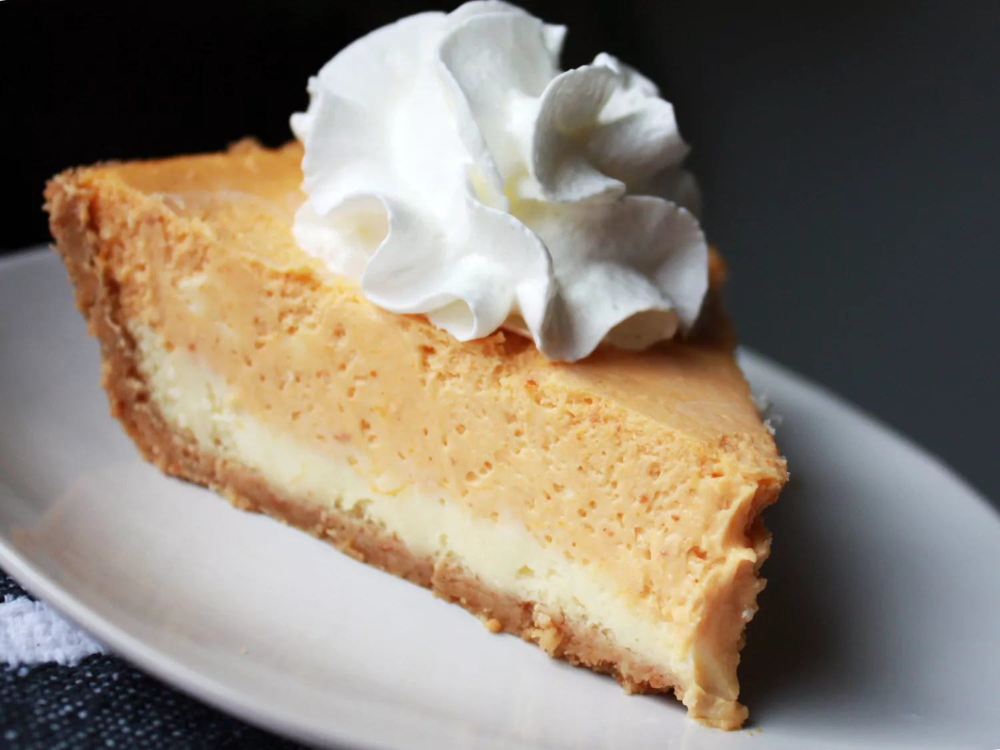

Pumpkin cheescake

pumpkin cheesecake
Looking to switch things up this holiday season? Trade your traditional
pie for a pumpkin cheesecake. With two layers of creamy goodness, this
decadent treat will be the star of your Thanksgiving dessert table.
Ingredients
Cheesecake Layer:
- 2 (8 ounce) packages cream cheese, softened
- ½ cup white sugar
- ½ teaspoon vanilla extract
- 2 large eggs
- 1 (9 inch) prepared graham cracker crust
Pumpkin Layer:
- ½ cup pumpkin puree
- ½ teaspoon ground cinnamon
- 1 pinch ground cloves, or more to taste
- 1 pinch ground nutmeg, or more to taste
Steps
- Preheat the oven to 325 degrees F (165 degrees C).
-
Make cheesecake layer: Beat cream cheese, sugar, and vanilla in a large
bowl with an electric mixer until smooth. Add eggs, one at a time,
blending well after each addition. Spread 1 cup batter in the graham
cracker crust.
-
Make pumpkin layer: Add pumpkin puree, cinnamon, cloves, and nutmeg to
the remaining batter; stir gently until well blended. Carefully spread
on top of plain cheesecake batter in the crust.
-
Bake in the preheated oven until the edges are puffed and the surface is
firm except for a small spot in the center that jiggled when the pan is
gently shaken, 35 to 40 minutes.
-
Remove from the oven, set on a wire rack, and cool to room temperature,
1 to 2 hours.
-
Refrigerate for at least 3 hours before serving, preferably overnight.